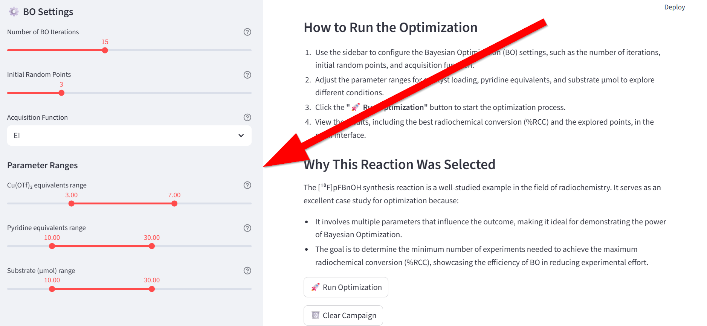

Simulation Case 1
Bayesian Optimization Playground Manual
Optimize the [¹⁸F]pFBnOH Synthesis Experiment
This simulation lets you explore how Bayesian Optimization (BO) can be used to improve a chemical reaction — in this case, the copper-mediated radiofluorination to produce [¹⁸F]pFBnOH.
You can freely experiment with the settings to see how BO explores parameter space and improves yield (radio-chemical conversion, %RCC).
Goal
Your objective is to maximize %RCC, the radiochemical conversion, by adjusting:
Catalyst loading (Cu(OTf)₂ equivalents)
Pyridine (ligand equivalents)
Precursor (substrate µmol)
Bayesian Optimization will intelligently suggest new experiments based on previous results to find the best reaction conditions efficiently.
Interface Overview
Left Panel – BO Settings
These control how the optimization behaves.

Setting |
Description |
How to Experiment |
|---|---|---|
Number of BO Iterations |
Total number of optimization steps (including initial random points). More steps = more exploration. |
Try small values (5–10) for quick demos, or 20–30 for deeper exploration. |
Initial Random Points |
Number of random experiments before BO starts learning patterns. This helps BO explore the space. |
Fewer random points make BO start learning earlier, but it might miss some regions. Try 2–5 to see the tradeoff. |
Acquisition Function |
Strategy BO uses to decide the next experiment. Common choices:
|
Try switching functions to see how the exploration pattern changes. EI is usually a good default. |
Parameter Ranges
These sliders define the experimental search space.
Think of them as the adjustable knobs on your virtual reactor.
Parameter |
Meaning |
Effect |
|---|---|---|
Cu(OTf)₂ equivalents range |
Catalyst loading. Higher values increase reaction rate but may reduce selectivity or waste catalyst. Range of catalyst loading (Cu). Typical: 1–4 eq. |
Try narrowing or expanding this range (e.g., 1.0–2.5 vs. 1.0–4.0) to see how BO focuses. |
Pyridine equivalents range |
Ligand amount. Pyridine stabilizes copper complexes — too little and the catalyst is unstable, too much and the reaction can slow down. Typical: 5–30 eq. |
Experiment with a wide range (5–30) to see how the model learns an optimal window. |
Substrate (µmol) range |
Amount of precursor. This affects both conversion and yield. Typical: 5–25 µmol. |
Try changing limits (e.g., 5–25 µmol vs. 10–40 µmol) to see how the optimizer handles scale. |
How to Run the Optimization
Set up your parameters
Use the sliders to adjust parameter ranges and BO settings.Choose acquisition function
From the dropdown, pick your strategy (EI, PI, or UCB).Click “Run Optimization”
The system will simulate the reaction multiple times.
You’ll see points explored and the best %RCC found.Check Results
The app displays the best conditions found and how exploration evolved.Reset with “Clear Campaign”
Starts a new optimization session — great for testing new ideas.
Tips for Exploration
Play with different acquisition functions to see how each explores the parameter space.
Reduce or expand parameter ranges to see how it affects the final optimum.
Imagine you are the experimental chemist:
Cu(OTf)₂ = catalyst strength
Pyridine = ligand stabilizer
Substrate = how much reactant you give the system
What You’ll Learn
How Bayesian Optimization balances exploration and exploitation.
How reaction parameters interact in chemical optimization.
How adjusting parameter ranges affects search efficiency.
That “optimal” depends not only on chemistry — but also on how you guide the algorithm.